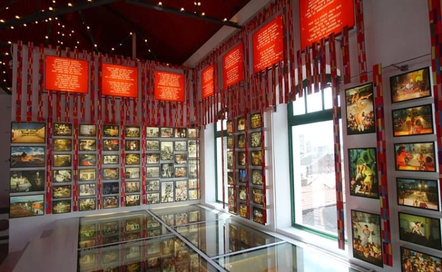
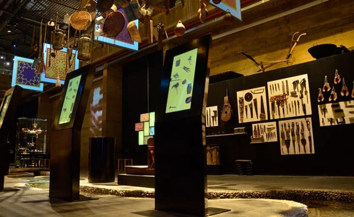

Recife oferece uma série de atividades e atrações para os milhares de turistas que visitam
a cidade todos os anos.
O centro de Recife é um verdadeiro charme, com seus monumentos históricos e casas coloridas
que remontam os primórdios do Brasil Colônia.
Suas construções trazem referências da arquitetura holandesa, pois o território também
foi invadido e colonizado pela Holanda, em 1630. Os prédios que se erguem pelas ruas do
Recife Antigo evidenciam esse passado repleto de acontecimentos importantes.
Além da rica cultura do lugar, as lindas praias também são uma opção para lá de boa de lugares para
conhecer em Recife.
Conheça abaixo outros dois importantes pontos turisticos:
PAÇO DO FREVO



Não dá para visitar Pernambuco e não arriscar alguns passos de frevo, afinal, o ritmo foi declarado Patrimônio Imaterial da Humanidade pela Unesco! No Paço do Frevo é Carnaval o ano inteiro. Lá estão expostos fotos e documentos que contam a história do ritmo e guarda registros do carnaval pernambucano que se manterão vivos para as futuras gerações. São três andares que guardam um rico acervo e, para acompanhar a visita, os corredores são embalados pelo som do frevo.
CAIS DO SERTÃO


